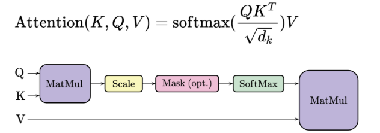

Project notes
Building the Self-Attention Mechanism from Scratch
In this project, I build a basic self-attention mechanism to calculate how each token attends to the other tokens in a sentence.
Spring 2025
Self-attention lets each token in a sequence gather information from the other tokens. In this project, I work through the scaled dot-product operation and implement a single attention head with NumPy. The small example below makes the matrix operations visible; its token vectors are hand-written for demonstration rather than learned from data.
1. Overview
Suppose a sentence contains $n$ tokens. We represent their vectors as rows of a matrix $X$. Three learned projection matrices normally transform those vectors into queries, keys, and values:
A query asks which tokens are relevant to the current token. Keys are compared with that query, while values provide the information that will be combined. Since all three are derived from the same input sequence, this is self-attention.

2. The Attention Calculation
First, compare every query with every key using a dot product. Divide the scores by the square root of the query/key dimension $d_k$:
Each row of $S$ contains the scores for one token attending to all tokens, including itself. The scaling helps keep the dot products from becoming too large as $d_k$ grows. Apply softmax to each row to obtain nonnegative attention weights that sum to one:
Finally, use those weights to combine the value vectors:
The output $O$ has one context vector per input token. If a token must not see later tokens, as in an autoregressive decoder, set the corresponding future-token scores to $-\infty$ before applying softmax. This optional step is called a causal mask.
3. NumPy Implementation
The function below computes one attention head. Subtracting the row maximum before exponentiation makes softmax numerically more stable.
import numpy as np
def softmax(logits):
shifted = logits - np.max(logits, axis=-1, keepdims=True)
exp_scores = np.exp(shifted)
return exp_scores / np.sum(exp_scores, axis=-1, keepdims=True)
def self_attention(x, w_q, w_k, w_v, causal=False):
q = x @ w_q
k = x @ w_k
v = x @ w_v
scores = (q @ k.T) / np.sqrt(q.shape[-1])
if causal:
future_tokens = np.triu(np.ones(scores.shape, dtype=bool), k=1)
scores = np.where(future_tokens, -np.inf, scores)
weights = softmax(scores)
context = weights @ v
return scores, weights, context
# Hand-written vectors for a three-token toy sentence.
tokens = ["the", "cat", "sat"]
x = np.array([[1.0, 0.0], [0.0, 1.0], [1.0, 1.0]])
identity = np.eye(2)
scores, weights, context = self_attention(
x, identity, identity, identity
)
print(tokens)
print("Attention weights:\n", np.round(weights, 3))
print("Context vectors:\n", np.round(context, 3))
Using identity projection matrices means $Q=K=V=X$ in this toy example. A trained model would learn separate projection matrices instead.
4. Reading the Results
Running the code prints:
['the', 'cat', 'sat']
Attention weights:
[[0.401 0.198 0.401]
[0.198 0.401 0.401]
[0.248 0.248 0.503]]
Context vectors:
[[0.802 0.599]
[0.599 0.802]
[0.752 0.752]]
The first row shows that the token “the” assigns about $40.1%$ of its attention to itself, $19.8%$ to “cat”, and $40.1%$ to “sat”. Multiplying this row by $V$ gives its context vector, approximately $[0.802, 0.599]$.
These numbers demonstrate the calculation, not linguistic understanding: the vectors and projection matrices were chosen by hand. A full Transformer learns its projections during training and usually runs several attention heads in parallel.
Reference
- Vaswani, A. et al. (2017). Attention Is All You Need. See Section 3.2.1 for scaled dot-product attention.